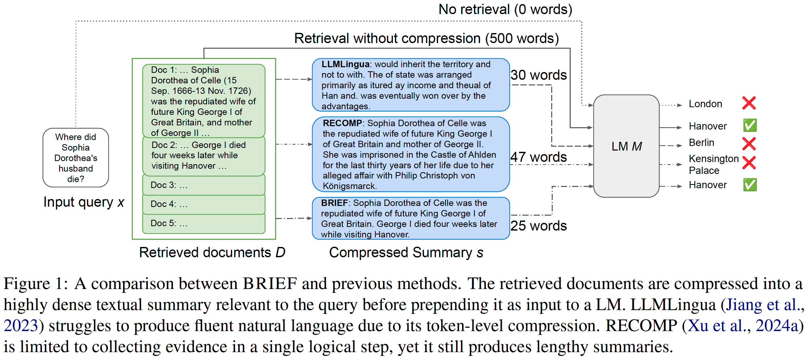
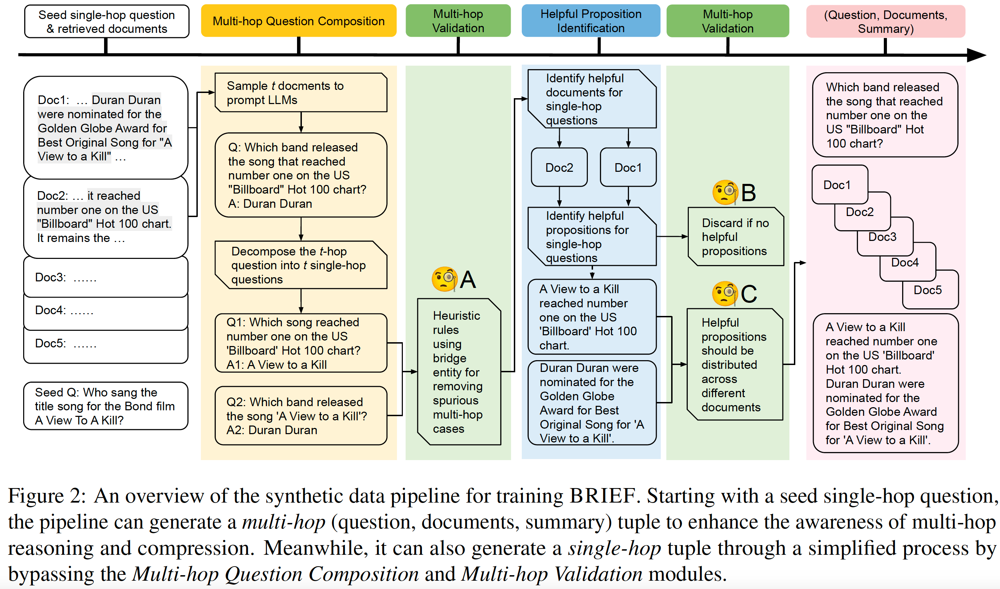
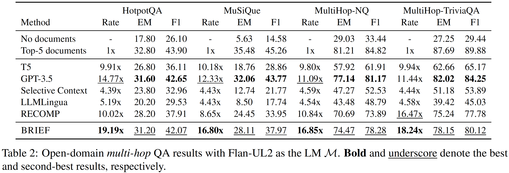

Retrieval-augmented generation (RAG) can supplement large language models (LLMs) by integrating external knowledge. However, as the number of retrieved documents increases, the input length to LLMs grows linearly, causing a dramatic increase in latency and a degradation in long-context understanding. This is particularly serious for multi-hop questions that require a chain of reasoning across documents. To accelerate inference, reduce costs, and minimize distractions, this paper presents BRIEF (Bridging Retrieval and Inference through Evidence Fusion), a lightweight approach that performs query-aware multi-hop reasoning by compressing retrieved documents into highly dense textual summaries to integrate into in-context learning. To enable learning compression for multi-hop reasoning, we curate synthetic data by extracting atomic proposition expressions that encapsulate distinct factoids from the source documents to compose synthetic summaries. Based on our synthetic data built entirely by open-source models, BRIEF generates more concise summaries and enables a range of LLMs to achieve exceptional open-domain question answering (QA) performance. For example, on HotpotQA, BRIEF improves the compression rate by 2 times compared to the state-of-the-art baseline, while outperforming it by 3.00% EM and 4.16% F1 with Flan-UL2 as the reader LM. It also generates more concise summaries than proprietary GPT-3.5, while demonstrating nearly identical QA performance.
BRIEF is a lightweight, T5-based approach that performs query-aware multi-hop reasoning by compressing retrieved documents into highly dense textual summaries to integrate into in-context learning.
Unlike conventional methods that focus on compression for single-hop questions (Xu et al., 2024a; Cao et al., 2024), BRIEF is specifically trained to summarize the most pertinent knowledge from multiple documents that is essential for answering multi-hop questions.
Compare to token-, phrase-, or sentence-level compression (Jiang et al., 2023; Li et al., 2023), the summaries produced by BRIEF organize and synthesize evidence relevant to the query in a more concise and natural language format, making them more effective for use by the follow-up reader LM.
Unlike state-of-the-art fine-tuned compressor distilled from extreme-scale proprietary LLMs (Xu et al., 2024a), BRIEF is trained on synthetic data through a pipeline built entirely by open-source models, without relying on any proprietary LLMs and human annotations.

We evaluated on the following datasets: HotpotQA (Yang et al., 2018), MuSiQue (Trivedi et al., 2022), Natural Questions (NQ) (Kwiatkowski et al., 2019), and TriviaQA (Joshi et al., 2017). Notably, the first two datasets primarily consist of multi-hop questions, whereas the latter two are mainly composed of single-hop questions. Especially for TriviaQA and NQ, we have curated high-quality multi-hop versions using our proposed synthetic data pipeline, named MultiHop-TriviaQA and MultiHop-NQ. We contribute high-quality multi-hop test sets that reveal the limitations of previous compressors, which perform well in single-hop but fall behind our method in multi-hop settings.

@inproceedings{li-etal-2024-brief,
title = "BRIEF: Bridging Retrieval and Inference for Multi-hop Reasoning via Compression",
author = "Li, Yuankai and
Gu, Jia-Chen and
Wu, Di and
Chang, Kai-Wei and
Peng, Nanyun",
year = "2024"
}